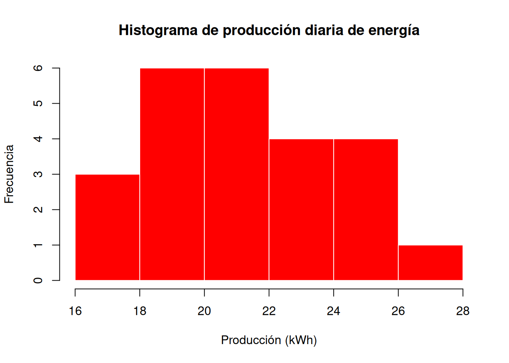
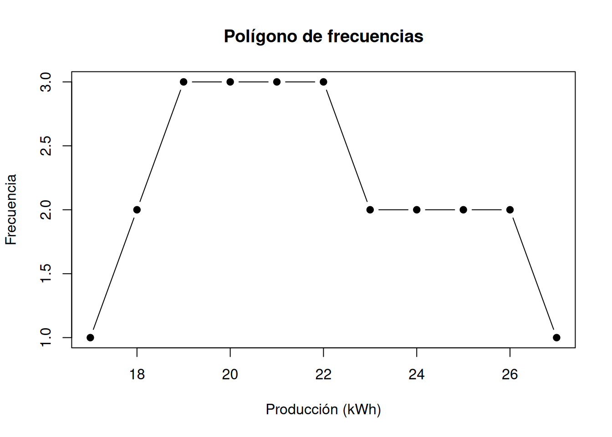
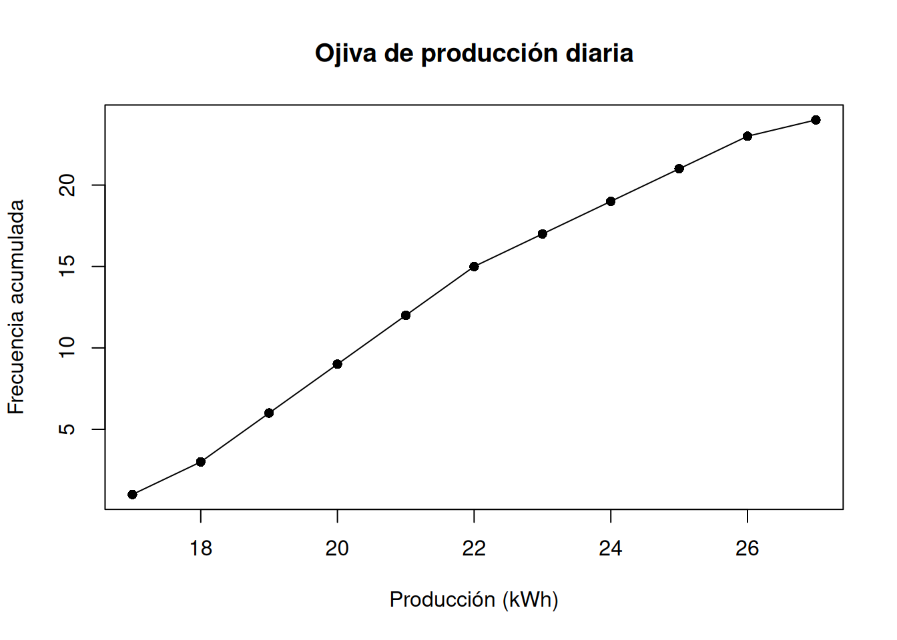
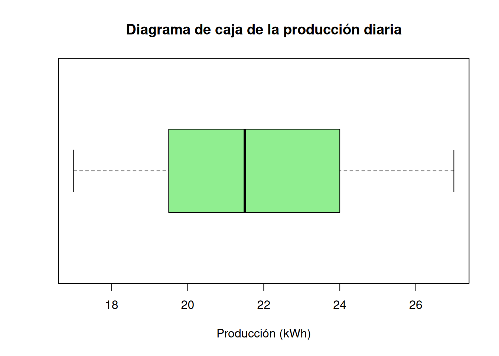

3 Representación gráfica de datos
3.1 Concepto teórico
La representación gráfica de datos es una herramienta esencial de la estadística descriptiva porque permite resumir visualmente la información, identificar patrones, detectar valores atípicos y comparar distribuciones. En contextos de ingeniería, los gráficos ayudan a interpretar el comportamiento de variables como tiempos de producción, consumos energéticos, resistencia de materiales, temperaturas, voltajes o caudales.
La elección del gráfico depende del tipo de variable y del objetivo del análisis. Entre las representaciones más utilizadas se encuentran:
3.1.1 Diagrama de barras
Se utiliza principalmente para variables cualitativas o cuantitativas discretas. Cada barra representa una categoría o valor y su altura es proporcional a la frecuencia.
3.1.2 Histograma
Se emplea para variables cuantitativas continuas o datos agrupados en intervalos. A diferencia del diagrama de barras, en el histograma las barras se presentan unidas, reflejando continuidad.
Si \(f_i\) representa la frecuencia de la clase \(i\), entonces cada barra resume el número de observaciones contenidas en el intervalo correspondiente.
3.1.3 Polígono de frecuencias
Se construye uniendo con segmentos de recta las marcas de clase \((x_i)\) con sus frecuencias \((f_i)\). Es útil para visualizar la forma general de la distribución y comparar varios conjuntos de datos.
3.1.4 Ojiva
La ojiva representa las frecuencias acumuladas. Si \(F_i\) es la frecuencia acumulada hasta la clase \(i\), entonces:
\[ F_i = \sum_{j=1}^{i} f_j \]
Este gráfico es útil para responder preguntas del tipo: “¿cuántos datos son menores o iguales que cierto valor?”
3.1.5 Diagrama de caja y bigotes
Resume visualmente la distribución mediante el mínimo, primer cuartil \(Q_1\), mediana \(Q_2\), tercer cuartil \(Q_3\) y máximo. También permite identificar posibles valores atípicos.
En ingeniería, estas representaciones permiten detectar comportamientos anómalos, comparar desempeño entre sistemas y apoyar decisiones técnicas basadas en evidencia.
3.2 Ejemplo aplicado
En un laboratorio de energías renovables se registra la producción diaria de energía solar (kWh) durante 24 días:
energia <- c(18, 20, 19, 22, 24, 21, 23, 25, 26, 20, 19, 18,
17, 21, 22, 23, 24, 26, 27, 25, 22, 21, 20, 19)
energia## [1] 18 20 19 22 24 21 23 25 26 20 19 18 17 21 22 23 24 26 27 25 22 21 20 19El objetivo es representar gráficamente los datos para interpretar su distribución.
3.3 Implementación en R
3.3.1 Histograma
hist(energia,
col = "red",
main = "Histograma de producción diaria de energía",
xlab = "Producción (kWh)",
ylab = "Frecuencia",
border = "white")
3.3.2 Polígono de frecuencias
frecuencias <- table(energia)
plot(as.numeric(names(frecuencias)), as.numeric(frecuencias),
type = "b", pch = 19,
main = "Polígono de frecuencias",
xlab = "Producción (kWh)",
ylab = "Frecuencia")
3.3.3 Ojiva
frecuencia_acumulada <- cumsum(as.numeric(frecuencias))
plot(as.numeric(names(frecuencias)), frecuencia_acumulada,
type = "o", pch = 16,
main = "Ojiva de producción diaria",
xlab = "Producción (kWh)",
ylab = "Frecuencia acumulada")
3.3.4 Diagrama de caja
boxplot(energia,
horizontal = TRUE,
col = "lightgreen",
main = "Diagrama de caja de la producción diaria",
xlab = "Producción (kWh)")
3.3.5 Ejemplo con ggplot2
library(ggplot2)
df_energia <- data.frame(energia = energia)
ggplot(df_energia, aes(x = energia)) +
geom_histogram(binwidth = 2, fill = "steelblue", color = "white") +
labs(title = "Histograma con ggplot2",
x = "Producción (kWh)",
y = "Frecuencia") +
theme_minimal()
3.4 Ejercicio propuesto
En una práctica de ingeniería industrial se registran los tiempos de operación (minutos) de una máquina:
Realice lo siguiente:
- Construya un histograma.
- Elabore un polígono de frecuencias.
- Genere la ojiva.
- Construya un diagrama de caja.
- Interprete cuál gráfico resulta más útil para estudiar dispersión y posibles valores atípicos.
3.5 Caso real (ingeniería)
En ingeniería civil, los histogramas se utilizan para analizar la resistencia a compresión del hormigón, la variación en dimensiones de elementos prefabricados o la distribución de tiempos de ejecución de partidas de obra.
En ingeniería eléctrica, las ojivas ayudan a estudiar distribuciones acumuladas de voltaje, corriente o factor de potencia.
En ingeniería industrial, los diagramas de caja permiten comparar tiempos de proceso entre turnos o líneas de producción, identificando variabilidad y datos atípicos.
En energías renovables, los gráficos estadísticos facilitan el análisis de producción eólica o solar, detectando periodos de máxima generación y comportamiento irregular del sistema.
La representación gráfica adecuada permite transformar datos en evidencia visual útil para el diagnóstico técnico y la mejora continua.